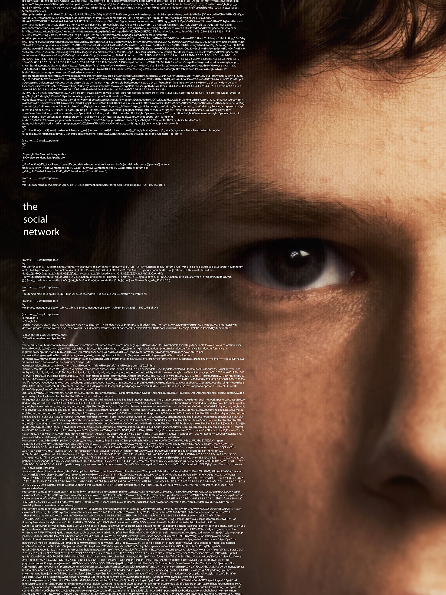

Bio
hi, im riley. im a current sophomore at bmcc majoring in engineering, hoping to go into computer engineering and more specifically robotics. i do a lot of cs/datasci/ai stuff as well, and i like to explore a lot of areas, especially related to engineering and my field, robotics. aside from that i also enjoy making art, as it satiates my need to just create, and i like to experiment a lot with that kind of stuff. i hope to make robots to take everyones jobs someday so that we can focus on better things besides flipping burgers and washing dishes.
Favorite Anime/Manga
movies ive watched
sometimes i like to think of myself as a young mark zuckerberg... minus the mark zuckerberg
Contact Info

Phone Number/Email
Contact via LinkedIn or Discord
https://www.linkedin.com/in/riley-drcelik/